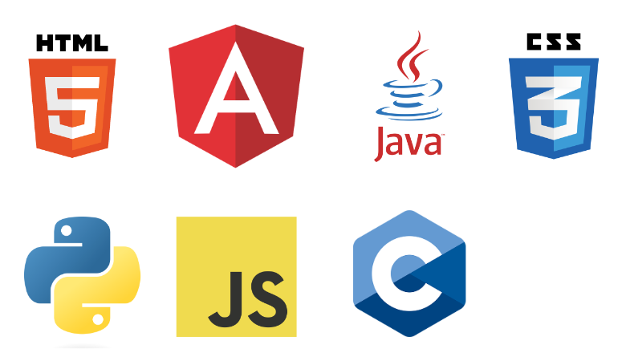
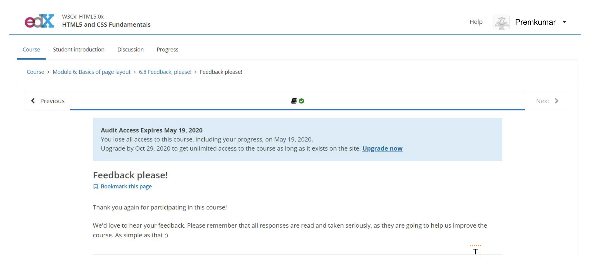

SANDIREDDY PREM KUMAR
FULL STACK DEVELOPER
"Life is not about waiting for the storm to pass but about learning to dance in the rain"
Skills
Experience
DIGITAL TAAS(2021-2022): As an intern, I engaged in various facets of machine learning, culminating in the development of a project focused on delivering relevant posts based on user interests.
INFOSYS LTD(2022-2023): I am a dedicated frontend developer with a passion for crafting seamless and visually appealing user experiences, specialize in Angular, a powerful and versatile front-end framework.
Project1

- devoloped a model using supervised classifictaion by training the images
- used modern deep learning techniques ,CNN, data augmentation
- The model is iterated for 50 epochs and validated with a dataset of size 0.2 from training set
- This meticulous approach ensures the model's reliability and effectiveness in accurately classifying images, marking a significant milestone
Project2
- Trained different machine learning models to classify a YouTube video into one of the 6 categories used.
- Used Web Scraping to gather data from YouTube using Selenium to automate the browser.
- Measured the accuracy of the models using Machine Learning methodologies and identified Random Forest Classifier as the optimal classifier with an accuracy of around 99% with the gathered data set.
Certification
This rigorous program equipped me with a solid foundation in web development, focusing on the essential skills required to create and style modern, responsive websites.
The curriculum covered key topics such as semantic HTML, forms, multimedia integration, and the principles of responsive design.
By completing this certification, I have honed my ability to create well-structured, accessible, and visually appealing websites, aligning with industry standards and best practices
Certificate Photo
Education
-
12th standard(2015-2017): Narayana Junior College
-
Bachelor's in computer science(2017-2021): GITAM UNIVERSITY
-
Masters in computer science(2023-Present): UNIVERSITY OF NEW HAVEN
Achievments
Secured the first-place position in the regional coding competition, showcasing strong problem-solving skills and proficiency in programming languages.
Received an innovation award for contributing to the enhancement of a key product, resulting in improved functionality and customer satisfaction.